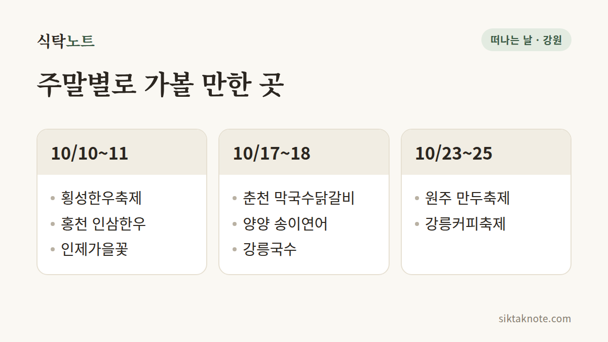

2026년 10월 강원도 축제 일정 — 날짜별로 한눈에 정리

3줄 요약
- 10월 4일부터 11월 8일까지 강원도에서 열리는 행사 11곳을 날짜순으로 담았어요.
- 주말로 나눠 보면 쉬워요. 10월 10~11일은 횡성·홍천·인제, 17~18일은 춘천·양양, 23~25일은 원주·강릉이에요.
- 공식 사이트나 한국관광공사에서 확인한 곳과 언론 보도로만 확인한 곳은 표에서 구분해 뒀어요.
행사 정보
- 기준일
- 2026년 10월 4일 (횡성·춘천·원주는 10월 5일에 다시 확인, 나머지는 10월 3일 확인 기준)
- 범위
- 2026년 10월 4일 ~ 11월 8일에 열리는 강원도 행사
- 확인 방법
- 공식 사이트·한국관광공사 안내를 우선하고, 읽지 못한 곳은 언론 보도로 확인
2026.10.05 확인 기준. 일정과 요금은 바뀔 수 있으니 방문 전에 공식 안내를 한 번 더 확인하세요.

10월 강원도 축제, 날짜순으로 한눈에
가을 주말마다 "이번엔 어디로 갈까" 고민되죠. 강원도는 10월 내내 축제가 줄줄이 이어져서, 일단 날짜부터 훑어보면 마음이 한결 가벼워져요.
| 날짜 | 행사 | 장소 | 확인 |
|---|---|---|---|
| 10/7(수)~11(일) | 횡성한우축제 (제22회) | 횡성 섬강 둔치 일원 | 한국관광공사 |
| 10/8(목)~11(일) | 홍천 인삼한우명품축제 | 홍천읍 갈마곡리 일대 | 한국관광공사 |
| 10/10(토) | 양구 로드&평화 DMZ 페스타 | 국립DMZ자생식물원, 펀치볼 둘레길 | 언론 보도 |
| ~10/11(일) | 인제가을꽃축제 (9/24 시작) | 인제 북면 용대관광지 | 한국관광공사 |
| 10/14(수)~18(일) | 춘천막국수닭갈비축제 | 춘천 공지천 산책로 일대 | 공식 사이트 |
| 10/15(목)~18(일) | 강릉국수축제 | 강릉 월화거리 | 언론 보도 |
| 10/16(금)~18(일) | 양양송이연어축제 | 양양읍 남대천 둔치 | 한국관광공사 |
| 10/17(토)~18(일) | 횡성 태종 노고문화제 | 횡성 강림면 노고단 일원 | 언론 보도 |
| 10/21(수)~25(일) | 강릉커피축제 | 강릉커피거리 (안목) | 공식 사이트 |
| 10/23(금)~25(일) | 원주 만두축제 | 원주 중앙동 전통시장 일원 (보도: 원주천·문화의거리까지 확대) | 공식 사이트 |
| 11/6(금)~8(일) | 양구 펀치볼 사과·시래기축제 | 양구 해안면 펀치볼 일원 | 언론 보도 |
맨 오른쪽 '확인' 칸은 이렇게 읽으시면 돼요. "공식 사이트"와 "한국관광공사"는 그곳에 2026년 날짜가 적혀 있는 것을 확인했다는 뜻이고, "언론 보도"는 기사로만 확인했다는 뜻이에요. 기사로만 확인한 행사는 떠나기 전에 한 번 더 살펴보는 편이 안전해요.

취향 따라 고르는 10월
먹는 재미가 먼저라면 춘천막국수닭갈비축제, 횡성한우축제, 양양송이연어축제, 원주 만두축제가 눈에 들어와요. 닭갈비와 막국수, 한우, 송이와 연어, 만두까지, 무엇을 먹으러 가는지 분명한 행사들이거든요. 강릉은 10월 중순에 국수축제, 하순에 커피축제가 이어져서 한꺼번에 몰아 가지 않고 이틀치를 나눠 다녀오기에 좋아요.
걷고 구경하는 쪽이 끌린다면 인제가을꽃축제가 있어요. 10월 11일까지이고, 매일 10시부터 18시까지 열려요. 양구 DMZ 페스타는 10월 10일 하루, 펀치볼 둘레길을 걷는 행사예요. 원주에서 가깝게 다녀오고 싶다면 원주 만두축제가 있고, 이웃한 횡성과 홍천에서도 10월 초에 행사가 열려요.

행사마다 알아 둘 이야기
횡성한우축제는 매일 저녁 뮤직페스타가 열려요. 불꽃쇼는 공식 일정표상 10월 7일과 10일 밤 9시인데, 공식 메인 페이지에는 다른 날짜가 적혀 있고 10월 5일 현재 이를 바로잡는 공지는 찾지 못했어요. 입장은 무료지만 한우구이터와 먹거리는 따로 값을 내야 하고요. 자세한 내용은 횡성한우축제 가이드에 담아 뒀어요.
홍천 인삼한우명품축제는 한국관광공사 안내에 입장 무료로 나와요. 다만 공식 포털을 열어 보지 못했으니, 개막 직전에 한 번 더 살펴보세요.
춘천막국수닭갈비축제는 닭갈비(200g) 9,900원, 막국수 6,900원으로 가격을 통일했고 입장은 무료예요. 운영 시간은 매일 11시부터 21시까지예요. 공식 공연·교통 안내가 이미지로만 올라와 있어 일자별 시간표는 글로 확인하지 못했어요. 닭갈비·막국수 할인권이 있는데 종이 할인권은 축제장에서는 쓸 수 없어요. 더 궁금하다면 춘천막국수닭갈비축제 가이드도 있어요.
양양송이연어축제의 송이보물찾기와 연어맨손잡기는 하루 세 번 열리고 사전 예약이 중심이에요. 체험은 1인 30,000원인데, 그중 10,000원은 지역상품권으로 돌려준다는 보도가 있었어요. 입장은 무료예요.
강릉커피축제는 한국관광공사에 "일부 유료"로 나와요. 시간표와 요금은 공식 사이트에 아직 자세히 올라오지 않았어요.
원주 만두축제는 중앙동 전통시장 일원에서 열리고, 보도에 따르면 올해는 원주천(새벽시장)과 문화의거리까지 무대가 넓어져요. 만두 빚기 체험, 만두 빨리 빚기 대회, 쿠킹쇼, 낙화놀이 등이 소개되었고, 공식 프로그램 페이지는 아직 준비 중이에요. 자세한 내용은 원주 만두축제 가이드에 담아 뒀어요.
곧 막을 내리는 행사들
10월 4일이 마지막인 정선아리랑제와 속초 설악문화제, 10월 5일까지인 고성명태축제가 있어요. 이 글을 읽는 날짜에 따라 이미 끝났을 수 있어요.
아직 날짜를 못 찾은 행사들
원주의 치악산한우축제는 2026년 날짜를 확인하지 못했어요. 확인한 자료는 2025년 5월 개최 소식뿐이에요. 11월에는 양구 사과·시래기축제 외에는 찾지 못했어요. 새 소식이 확인되면 이 글에 더할게요.
떠나기 전에 한 번만 더
축제는 날씨나 사정에 따라 프로그램이 바뀔 수 있어요. 위 표는 2026년 10월 3일 기준(횡성·춘천·원주는 10월 5일 기준)이니, 출발하기 전에 위의 공식 링크에서 한 번 더 확인해 주세요. 행사 정보가 바뀌거나 새로 확인되면 이 글을 고쳐서 날짜를 남겨 둘게요. 올가을 강원도 나들이, 맛있고 느긋하게 다녀오시길 바라요.